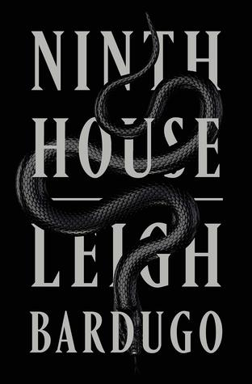
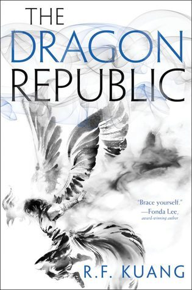

Fire & Blood
(A Targaryen History #1)
by George R.R. Martin
(A Targaryen History #1)
by George R.R. Martin
Meet Roger. Skilled with words, languages come easily to him. He instinctively understands how the world works through the power of story.
Meet Dodger, his twin. Numbers are her world, her obsession, her everything. All she understands, she does so through the power of math.
Roger and Dodger aren’t exactly human, though they don’t realise it. They aren’t exactly gods, either. Not entirely. Not yet.
Meet Reed, skilled in the alchemical arts like his progenitor before him. Reed created Dodger and her brother. He’s not their father. Not quite. But he has a plan: to raise the twins to the highest power, to ascend with them and claim their authority as his own.
Godhood is attainable. Pray it isn’t attained.
Meet Dodger, his twin. Numbers are her world, her obsession, her everything. All she understands, she does so through the power of math.
Roger and Dodger aren’t exactly human, though they don’t realise it. They aren’t exactly gods, either. Not entirely. Not yet.
Meet Reed, skilled in the alchemical arts like his progenitor before him. Reed created Dodger and her brother. He’s not their father. Not quite. But he has a plan: to raise the twins to the highest power, to ascend with them and claim their authority as his own.
Godhood is attainable. Pray it isn’t attained.
Middlegame
by Seanan McGuire
by Seanan McGuire
 Zachary Ezra Rawlins is a graduate student in Vermont when he discovers a mysterious book hidden in the stacks. As he turns the pages, entranced by tales of lovelorn prisoners, key collectors, and nameless acolytes, he reads something strange: a story from his own childhood. Bewildered by this inexplicable book and desperate to make sense of how his own life came to be recorded, Zachary uncovers a series of clues--a bee, a key, and a sword--that lead him to a masquerade party in New York, to a secret club, and through a doorway to an ancient library, hidden far below the surface of the earth.
Zachary Ezra Rawlins is a graduate student in Vermont when he discovers a mysterious book hidden in the stacks. As he turns the pages, entranced by tales of lovelorn prisoners, key collectors, and nameless acolytes, he reads something strange: a story from his own childhood. Bewildered by this inexplicable book and desperate to make sense of how his own life came to be recorded, Zachary uncovers a series of clues--a bee, a key, and a sword--that lead him to a masquerade party in New York, to a secret club, and through a doorway to an ancient library, hidden far below the surface of the earth.
Starless Sea
by Erin Morgenstern
by Erin Morgenstern
 Galaxy “Alex” Stern is the most unlikely member of Yale’s freshman class. Raised in the Los Angeles hinterlands by a hippie mom, Alex dropped out of school early and into a world of shady drug dealer boyfriends, dead-end jobs, and much, much worse. By age twenty, in fact, she is the sole survivor of a horrific, unsolved multiple homicide. Some might say she’s thrown her life away. But at her hospital bed, Alex is offered a second chance: to attend one of the world’s most elite universities on a full ride. What’s the catch, and why her?
Ninth House
(Alex Stern #1)
by Leigh Bardugo
(Alex Stern #1)
by Leigh Bardugo
 In this powerful entry in the #1 New York Times bestselling series, Mercy Thompson must face a deadly enemy to defend all she loves...
In this powerful entry in the #1 New York Times bestselling series, Mercy Thompson must face a deadly enemy to defend all she loves...
Storm Cursed
(Mercy Thompson #11)
by Patricia Briggs
(Mercy Thompson #11)
by Patricia Briggs
S. A. Chakraborty continues the sweeping adventure begun in The City of Brass conjuring a world where djinn summon flames with the snap of a finger and waters run deep with old magic; where blood can be dangerous as any spell, and a clever con artist from Cairo will alter the fate of a kingdom.
The Kingdom of Copper
(The Daevabad Trilogy #2)
by S.A. Chakraborty
(The Daevabad Trilogy #2)
by S.A. Chakraborty
 In the aftermath of the Third Poppy War, shaman and warrior Rin is on the run: haunted by the atrocity she committed to end the war, addicted to opium, and hiding from the murderous commands of her vengeful god, the fiery Phoenix. Her only reason for living is to get revenge on the traitorous Empress who sold out Nikan to their enemies.
The Dragon Republic
(The Poppy War #2)
by R.F. Kuang
(The Poppy War #2)
by R.F. Kuang
 Ivy Gamble has never wanted to be magic. She is perfectly happy with her life—she has an almost-sustainable career as a private investigator, and an empty apartment, and a slight drinking problem. It's a great life and she doesn't wish she was like her estranged sister, the magically gifted professor Tabitha.
Ivy Gamble has never wanted to be magic. She is perfectly happy with her life—she has an almost-sustainable career as a private investigator, and an empty apartment, and a slight drinking problem. It's a great life and she doesn't wish she was like her estranged sister, the magically gifted professor Tabitha.But when Ivy is hired to investigate the gruesome murder of a faculty member at Tabitha’s private academy, the stalwart detective starts to lose herself in the case, the life she could have had, and the answer to the mystery that seems just out of her reach.
Magic for Liars
by Sarah Gailey
by Sarah Gailey
The Winternight Trilogy introduced an unforgettable heroine, Vasilisa Petrovna, a girl determined to forge her own path in a world that would rather lock her away. Her gifts and her courage have drawn the attention of Morozko, the winter-king, but it is too soon to know if this connection will prove a blessing or a curse.
Now Moscow has been struck by disaster. Its people are searching for answers—and for someone to blame. Vasya finds herself alone, beset on all sides.
Now Moscow has been struck by disaster. Its people are searching for answers—and for someone to blame. Vasya finds herself alone, beset on all sides.
The Winter of the Witch
(Winternight Trilogy #3)
by Katherine Arden
(Winternight Trilogy #3)
by Katherine Arden